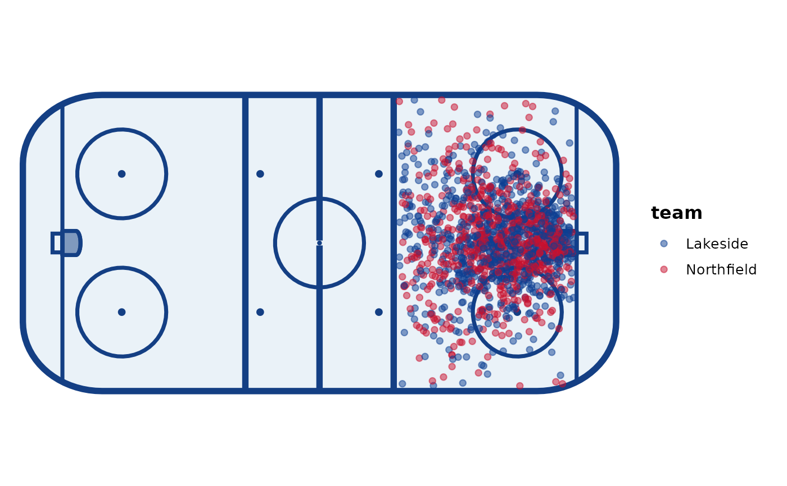

team_palette() builds a palette from your own team colours (gghockey ships none)
and scale_colour_team() / scale_fill_team() apply it, matching teams by name.
Each team has a primary and, optionally, a secondary colour; a missing secondary
falls back to the primary.
Arguments
- team
Team names (or ids), as they appear in your data.
- primary
Primary colours, one per team: any colour R understands (hex codes like
"#C8102E"or names like"navy").- secondary
Optional secondary colours, one per team (
NAto fall back to the primary).- palette
A palette from
team_palette().- which
"primary"or"secondary"colours.- ...
Passed to
ggplot2::scale_colour_manual()/ggplot2::scale_fill_manual(), e.g.nameorna.value.
Value
team_palette() returns a gghockey_palette data frame with columns
team, primary and secondary. The scales return ggplot2 scales.
Examples
pal <- team_palette(
team = c("Lakeside", "Northfield"),
primary = c("#0B3D91", "#C8102E"),
secondary = c("#F2A900", NA)
)
pal
#> <gghockey_palette> 2 teams
#> team primary secondary
#> Lakeside #0B3D91 #F2A900
#> Northfield #C8102E #C8102E
library(ggplot2)
ggplot(shots, aes(x, y, colour = team)) +
annotate_rink() +
geom_point(alpha = 0.5) +
scale_colour_team(pal)

# Turn a named vector into a palette
cols <- c(Lakeside = "#0B3D91", Northfield = "#C8102E")
team_palette(names(cols), cols)
#> <gghockey_palette> 2 teams
#> team primary secondary
#> Lakeside #0B3D91 #0B3D91
#> Northfield #C8102E #C8102E